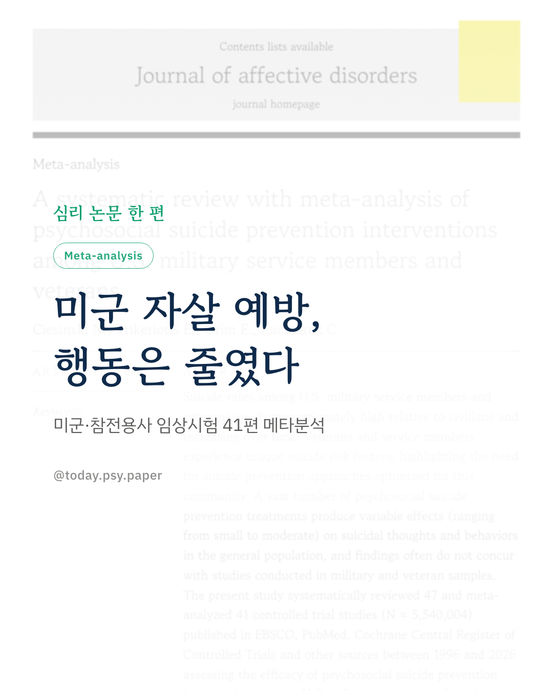
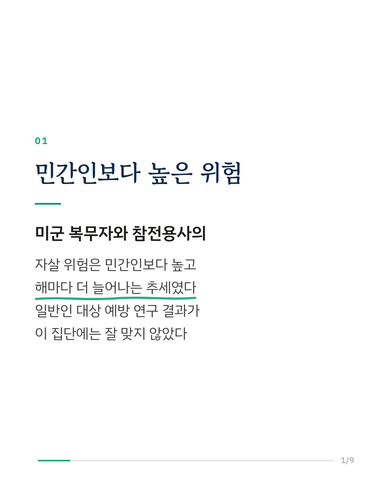
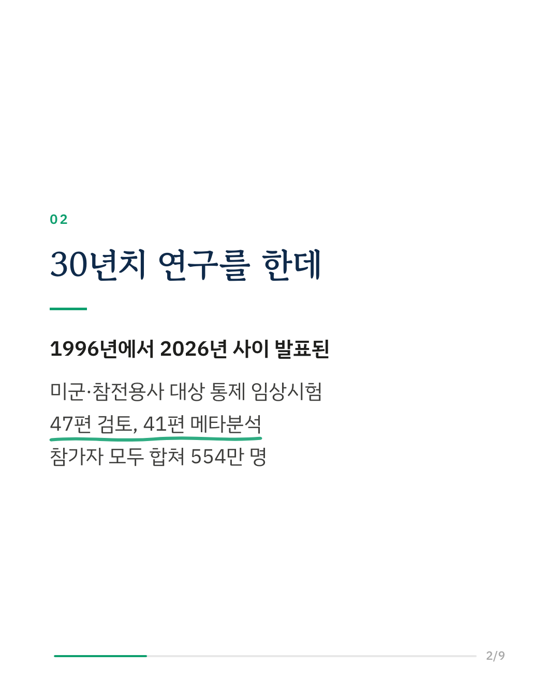
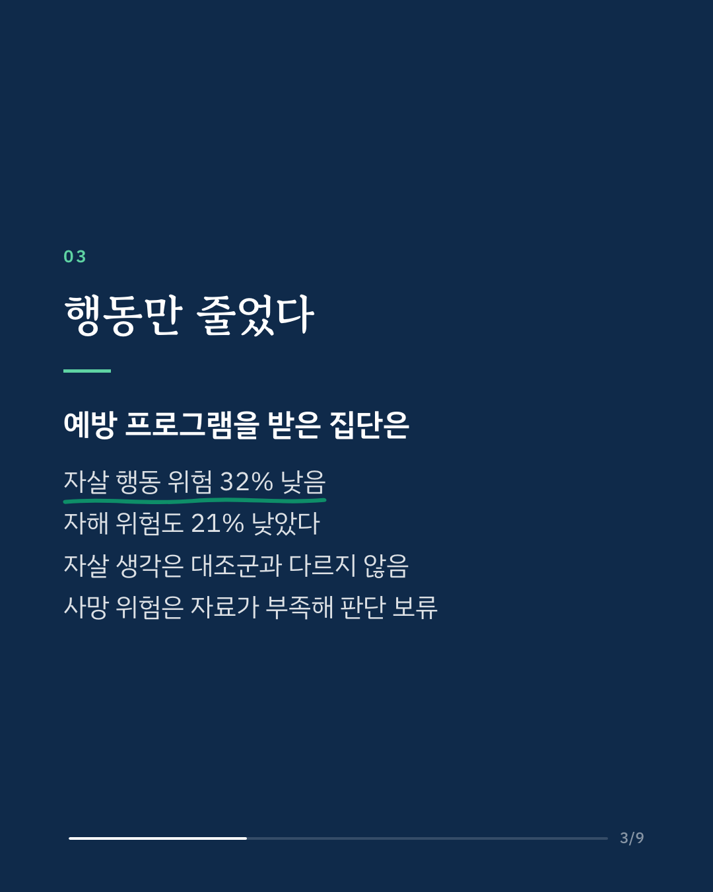
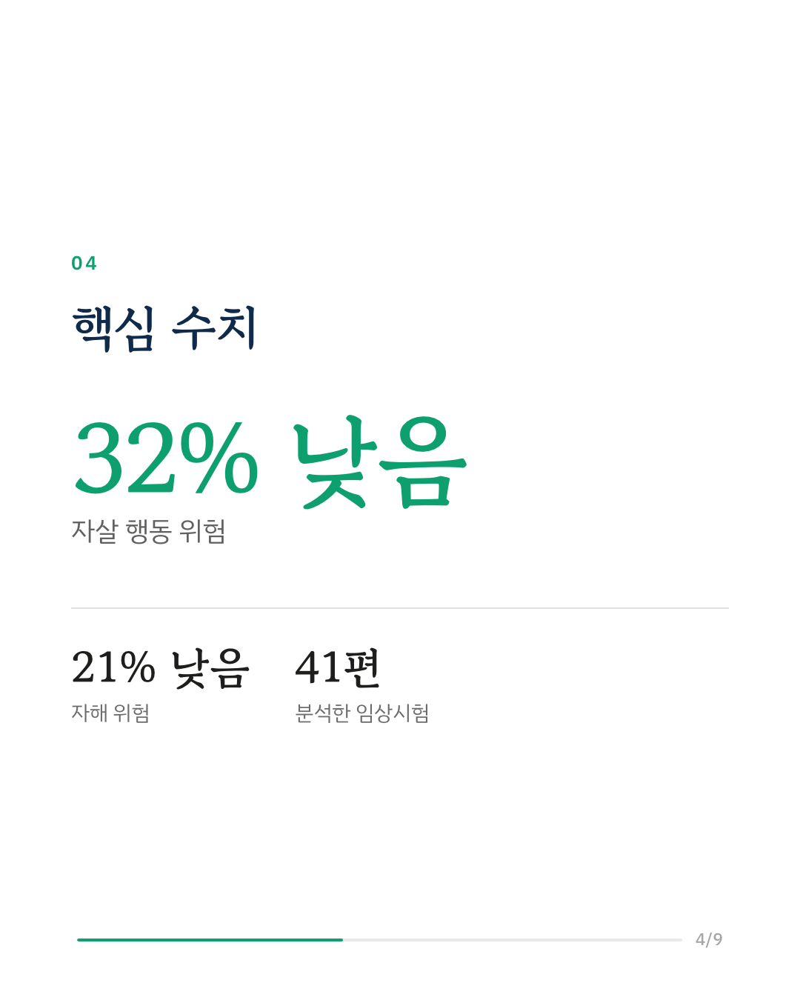
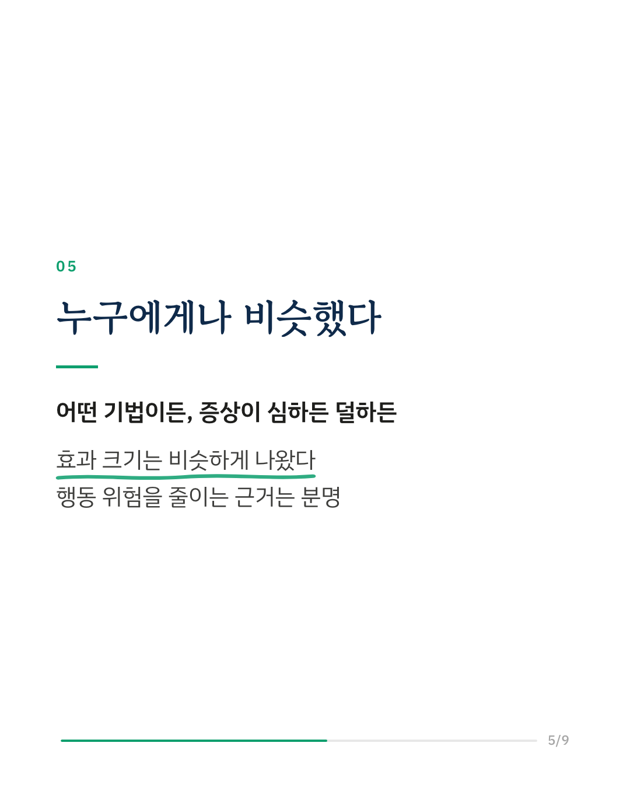
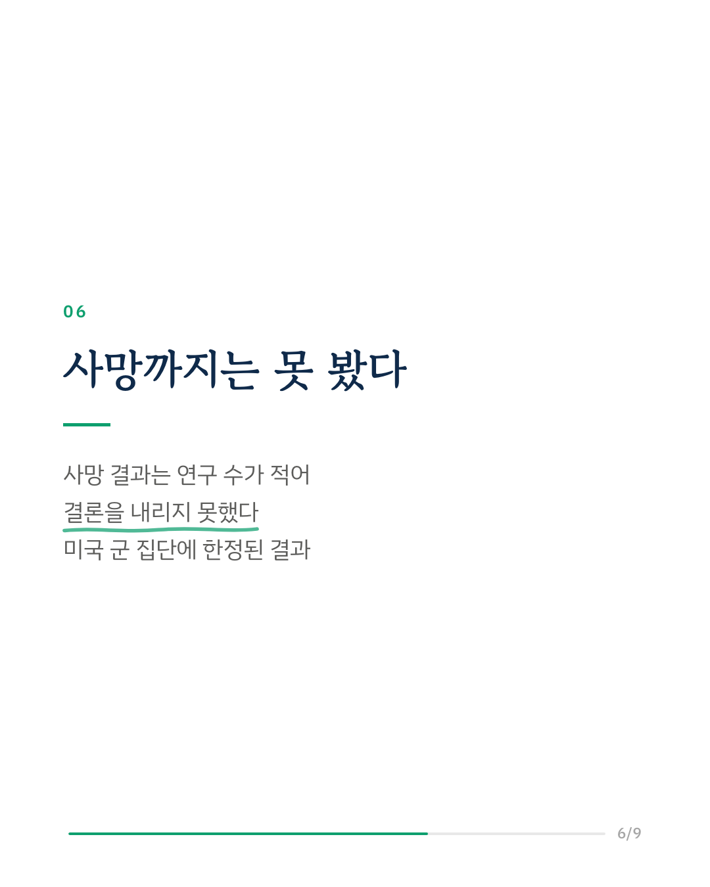
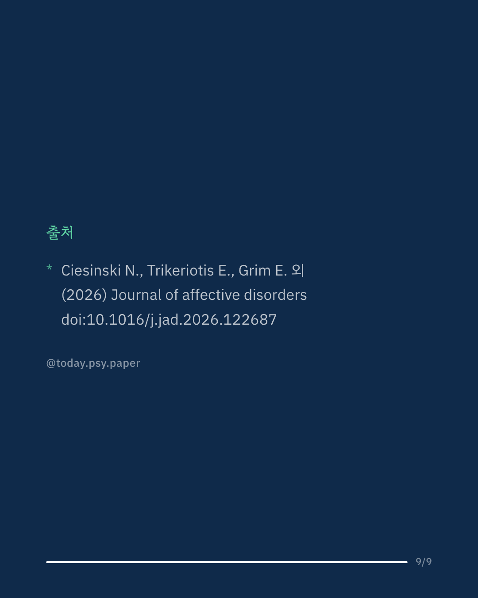

미군 복무자와 참전용사의 자살 위험은 민간인보다 높고, 시간이 갈수록 더 높아지고 있습니다. 그래서 이 집단에 맞춘 자살 예방 프로그램이 실제로 효과가 있는지 확인하는 일이 정신건강 분야의 오래된 과제였습니다. 연구팀은 1996년부터 2026년 사이에 발표된 미군·참전용사 대상 통제 임상시험 47편을 검토하고, 그중 41편을 메타분석했습니다. 참가자는 모두 합쳐 554만 명이었습니다. 심리사회적 예방 프로그램을 받은 집단은 대조군보다 자살 행동 위험이 32%, 자해 위험이 21% 낮았습니다. 반면 자살 생각은 대조군과 다르지 않았습니다. 사망 결과를 다룬 연구는 수가 적어 효과가 있는지 없는지 결론을 내리지 못했습니다. 인지행동치료가 들어갔는지, 참가자의 증상이 얼마나 심했는지에 따라 효과 크기가 달라지지도 않았습니다. 연구팀은 이 결과를 두고, 예방 프로그램이 자살 행동을 줄이는 근거는 확인됐지만 자살 생각이나 사망 위험을 줄이는 근거는 아직 세워지지 않았다고 말합니다. 미국 군 집단만 분석했기 때문에 다른 나라나 민간인에게 같은 결과가 나올지는 이 연구로 알 수 없습니다. Journal of Affective Disorders (2026), 'A systematic review with meta-analysis of psychosocial suicide prevention interventions among U.S. military service members and veterans' 힘든 마음이 들 때는 자살예방상담전화 109, 정신건강상담전화 1577-0199에서 도움을 받을 수 있습니다. DOI: 10.1016/j.jad.2026.122687 #임상심리 #정신건강정보 #심리학연구 #논문리뷰 #자살예방 #참전용사 #메타분석
python3 publish.py 42976993